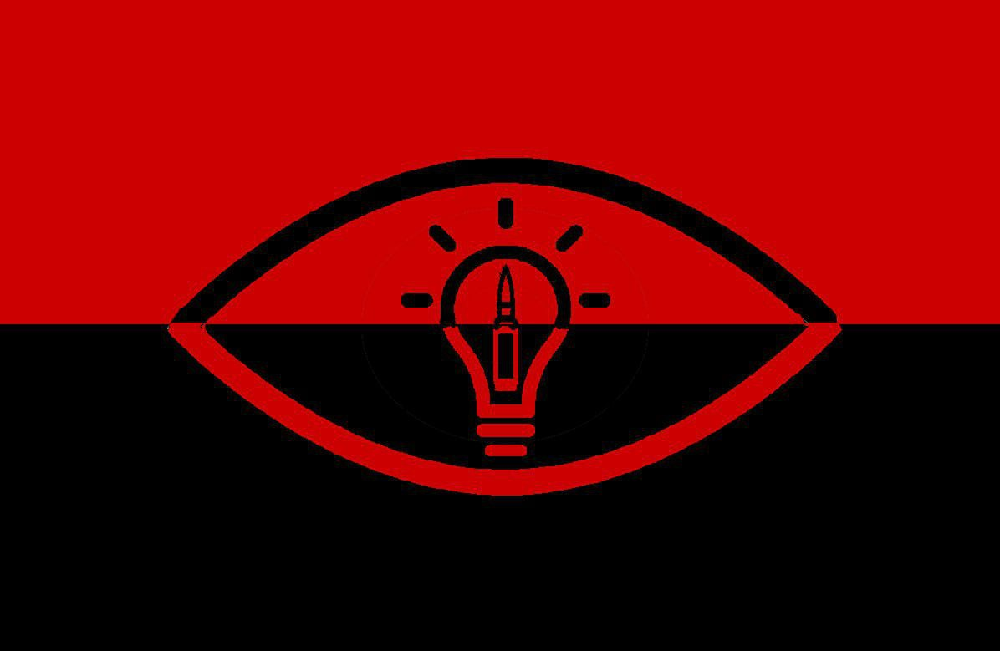

Ідеологія Сапіонізма : Шлях Розумної Людини
Хто Ми?
Сапіонізм - це ідеологія, що прославляє розум, ідеї і зброю як основні стовпи розвитку людини. Назва дана по аналогії з терміном "homo sapiens", що в перекладі означає "людина розумна". Наша ідеологія не прагне до радикалізму, а швидше закликає до розумного розгляду світу і уміння застосовувати інтелектуальні, ідеологічні і військові аспекти для досягнення прогресу.
Принципи Сапіонізма:
- Розум: Свідомий розвиток інтелекту стає основою сапіоністської ідеології. Навчання, критичне мислення і пошук знань визнаються ключовими компонентами еволюції особи і суспільства. Це веде до формування адекватної культури.
- Ідея: Важливість розробки ідей, здатних збагатити суспільство і поліпшити життя людей, підкреслюється в сапіоністській ідеології. Підтримка креативності, інновацій і повага до різноманітності мислення вважаються невід'ємними частинами процесу побудови кращого майбутнього.
- Зброя: У контексті Сапіонізма, зброя розглядається як засіб забезпечення безпеки і захисту цінностей. При цьому закликається використовувати цей засіб мудро і відповідально, у рамках законів самої ідеології. Сапіоніст закликає до сили, спрямованої на відвертання зла, а не на його заохочення.
Мета Сапіонізма:
Метою ідеології Сапіоністів є створення суспільства, в якому розум, ідеї і зброя служать гармонійно разом для досягнення добробуту і прогресу. Це суспільство грунтоване на принципах освіти і відповідальності, а кожен член цього суспільства покликаний бути активним учасником цього співтовариства, що прагне до прогресу.

*Прапор нашого Бойового Корпусу (БК)*